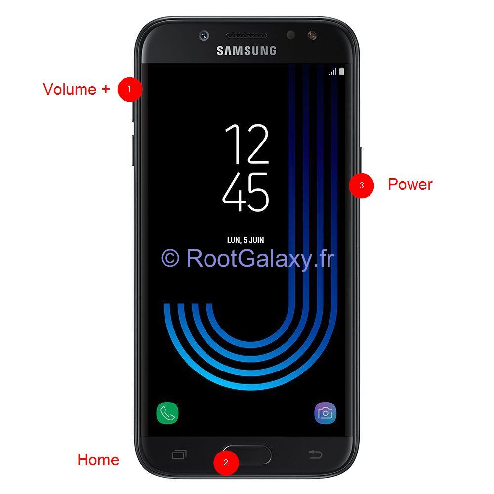

Rooter un Samsung Galaxy [Tuto]
Dans ce tutoriel je vous propose d'apprendre la meilleure façon pour rooter votre smartphone Samsung Galaxy étape par étape. Cette méthode devrait fonctionner pour tous les Samsung Galaxy y compris pour le dernier modèle Samsung Galaxy S10 qui vient juste de sortir (aussitôt que le TWRP sera disponible).


Avant tout, je vous déconseille fortement l'utilisation de King Root, qui va installer KingrootSU à la place du SuperSU standard dont il sera très difficile de se débarrasser ensuite. Si vous êtes dans cette situation et que vous souhaitez supprimer KingRoot complètement je vous recommande d'utiliser Super-SUMe, si vous ne souhaitez pas acheter la version pro, il existe également une version qui se finance par la publicité.
- Télécharger et installer les pilotes USB Android
- Télécharger et installer Odin
- Télécharger le "Custom Recovery" (TWRP)
- Télécharger le fichier de root flashable (SuperSU)
- Désactivez le vérouillage OEM de votre smartphone
- Redémarrer son Samsung Galaxy en mode "Download"
- Flasher le TWRP sur son Samsung Galaxy
- Utiliser TWRP pour installer le root et SuperSu
Astuces Bonus:
Télécharger et installer les Pilotes USB Android
Comment installer les pilotes usb de votr téléphone ? C'est très simple, sous Windows 10 les pilotes USB pour smartphones android devraient être disponibles par défaut. Si ce n'est pas le cas ou que vous utilisez une autre version de Windows, téléchargez le fichier SAMSUNG_USB_Driver_for_Mobile_Phones.zip sur la page officielle Samsung : https://developer.samsung.com/galaxy/others/android-usb-driver-for-windows Décompressez l'archive et exécutez le programme d'installation des drivers de votre appareil android.
Télécharger et installer Odin
Odin est le logiciel Windows qui permet de "flasher" une rom sur votre smartphone. Téléchargez la version 3.13.1 de Odin (https://samsungodin.com) et installez l'application sur votre ordinateur.
Télécharger le "Custom Recovery" (TWRP)
TWRP est l'acronyme de "TeamWin Recovery Project", c'est un firmware custom tactile en mode graphique pour remplacer la partition de "recovery" de votre smartphone. Les fichiers sont disponibles sur la page de la communauté TeamWin à cette adresse: https://twrp.me.
Téléchargez le firmware TWRP qui correspond au modèle de votre smartphone ici : https://twrp.me/Devices
Par exemple, le modèle exact de mon téléphone Samsung Galaxy J5 est SM-J500FN, le TWRP correspondant est disponible ici: https://eu.dl.twrp.me/j5nlte Attention, pour certains smartphones le fichier ne va peut-être pas fonctionner ou ne sera tout simplement pas disponible. Cette opération se fait à vos risques et périls.
Télécharger le fichier de root flashable (SuperSU)
"SuperSU" est l'application android qui permet de gèrer les autorisations utilisateurs et les accès "root", c'est une fonctionalité indispensable pour la sécurité de votre téléphone.
Vous devez maintenant télécharger le fichier de "Super SU" au format .zip en version "Recovery Flashable" qui vous permettra d'effectivement "rooter" votre système. Je vous recommande la version "UPDATE-SuperSU-v2.82-20170528234214.zip" si elle est disponible. J'ai pu la trouver ici : https://download.chainfire.eu/1113/SuperSU/UPDATE-SuperSU-v2.82-20170528234214.zip
Au moment ou j'écris ces lignes le fichier SuperSU-v2.82-201705271822.zip n'est pas disponible sur le site supersu.com mais vous pourrez peut être le trouver ici: https://download.chainfire.eu/1220/SuperSU
Sinon, je vous suggère de faire une recherche google sur ce fichier.
Désactivez le vérouillage OEM de votre smartphone
D'abord, activez le "mode développeur", entrez dans les "Paramètres", puis ouvrez le menu "À propos de l'appareil" puis cliquez une dizaine de fois sur le "Numéro de version".
Le menu "Options de développement" devrait apparaitre dans les paramètres, activez l'option "Déverrouillage OEM".
Si vous n'activez pas cette option, il sera impossible de démarrer votre téléphone après le root et vous serez obligé de flasher votre téléphone avec une ROM officele pour pour l'utiliser à nouveau.
Redémarrer son Samsung Galaxy en mode "Download"
Par sécurité assurez vous d'avoir suffisament de batterie (au moins 50%), puis éteingnez votre smartphone. Je vous recommande également de faire une sauvegarde de vos donnée avant d'aller plus loin.
Pour redémarrer en mode "Download" maintenez enfoncés les boutons Volume - Home Power (Volume -, Accueil et Mise en route). Quand votre téléphone vibre, vous pouvez relâcher le bouton Power en maintenant les 2 autres appuyés, jusqu'à ce qu'un message s'affiche.

Pour passer l'avertissement de sécurité du Bootloader de votre Samsung Galaxy appuyez sur le bouton Volume + pour entrer dans le mode Download. Une fois dans le mode "Download", brancher le smartphone sur le PC, et patientez que Windows installe les pilotes USB et que Odin détecte le smartphone.
Flasher le TWRP sur son Samsung Galaxy
Si vous ne l'avez pas déjà fait ouvrez Odin puis cliquez sur le boutnon "AP" et sélectionnez le fichier TWRP-recovery que vous avez téléchargé (il doit être en .tar ou .tar.md5)

Avant de cliquer sur Start, vérifiez que toutes les cases sont cochées comme sur l'image ci-dessus.
- Lorque vous branchez votre smartphone en mode "download", le message "ID:COM" s'active dans l'interface d'Odin.
- Cliquez sur l'onglet "Options".
- La case "Auto-Reboot" n'est pas indispensable, elle permet simplement de redémarrer votre téléphone automatiquement à la fin de l'opération.
- La case "Re-Partition" ne doit surtout pas être cochée, sinon vous risquez d'endommager votre téléphone.
- La case "F. Reset Time" doit être cochée également.
- Dans le cadre de droite, la case "AP" doit être cochée et le champ associé doit contenir le chemin vers le fichier que vous souhiatez flasher.
- Ne débranchez surtout pas votre smartphone après avoir appuyé sur le bouton "Start".
Quand vous verrez le message "PASS" en vert, débranchez le câble USB et allumez votre smartphone, s'il se bloque au démarrage, démarrer le en mode Recovery (Volume + Home Power) et faites un Wipe Data/Factory Reset.
Redémarrer son Samsung Galaxy en mode "Recovery"
Pour redémarrer en mode "Recovery" maintenez enfoncés les boutons Volume +, Home, Power quand votre téléphone vibre, vous pouvez relâcher le bouton d'alimentation mais maintenez enfoncé les 2 autres.

Utiliser TWRP pour installer le root et SuperSu
Connectez votre téléphone et copiez l'archive "SuperSU" sur la carte SD de votre smartphone. Redémarrer votre téléphone en mode "Recovery", accèdez au menu pour flasher le root.
Cliquez sur "Install", selectionnez le fichier "SuperSU" que vous avez précédemment copié, puis cliquez sur le bouton "Install Image". Redémarrez votre téléphone quand l'opération est terminée.
Si votre téléphone se bloque au démarrage, démarrer le en mode "Recovery" (Volume + Home Power) et faites un "Wipe Data/Factory Reset". (Attention: Toutes les données de votre téléphone seront perdues si vous ne les aviez pas précédemment sauvegardées).
Pourquoi rooter mon Samsung Galaxy ?
Voilà votre smartphone Samsung Galaxy est rooté, vous pouvez maintenant utiliser votre appareil sans limitations. Par exemple vous pouvez maintenant:
- Supprimer les applications système superflues avec "Désinstalleur App Sytème"
- Sauvegarder vos application et vos données avec "Titanium Backup"
- Bloquer les publicités avec "AdAway"
- Mettre en place des règles de pare feu avec "AFWall+"
- Accèder à la racine de votre appareil avec ES Explorateur de Fichiers
- Utiliser toute la puissance d'Android en ligne de commande avec "Termux"
Attention, à partir du moment où vous aurez rooté votre smartphone, vous ne pourrez plus bénéficier de la mise à jour automatique de votre système. Vous devrez faire cette mise à jour manuellement avec Odin en suivant la procédure décrite au chapitre Comment restaurer mon Samsung Galaxy dans son état d'origine.
Comment Flasher Une ROM Custom
Télécharger une ROM custom
Les ROMs cutoms sont devenues beaucoup moins pertinentes surtout depuis que CyanogenMod à disparu et aussi il faut avouer que les ROMs officielles Samsung ont étées vraiment améliorées. Mais si toutefois il vous prenait l'envie d'éssayer Lineage le successseur de CyanogenMod ou une autre ROM custom de votre préférence, je vous propose de suivre ces quelques conseils.
Il y a au moment ou j'écris ces lignes surtout trois principales ROMs custom intéressantes à tester sur votre Samsung Galaxy, vous pouvez les télécharger sur les pages suivvantes:
- Lineage: https://download.lineageos.org
- Dirty Unicorns: http://download.dirtyunicorns.com
- Slimroms: https://slimroms.org/#/download
Flashez la ROM custom
Appliquez les étapes 6 et 7 de ce tutoriel, mais sélectionnez la ROM custom que vous avez téléchargée dans le champm "AP" d'Odin.
Comment restaurer mon Samsung Galaxy dans son état d'origine
Télécharger le Firmware Samsung
Téléchargez le firmware pour votre smartphone, vous pouvez en trouver sur le site Sammobile (en anglais) (http://www.sammobile.com/firmwares) ou Phonandroid
Attention vous devez télécharger le firmware (la ROM) qui correspond au "Numéro du modèle" exact de votre smartphone. Vous le trouverez dans le menu "À propos de l'appareil" dans les "Paramètres" de votre téléphone.
Par exemple je possède un Samsung Galaxy J3, le numéro de modèle exact est SM-J320FN, j'ai pu trouver les ROMs Samsung officielles ici: - https://www.sammobile.com/firmwares/galaxy-j3/SM-J320FN - https://www.phonandroid.com/forum/threads/roms-liste-des-roms-officielles-pour-samsung-galaxy-j3-sm-j320fn.147869
Je possède aussi un Samsung Galaxy J5, son numéro de modèle est SM-J500FN - https://www.sammobile.com/firmwares/galaxy-j5/SM-J500FN - https://www.phonandroid.com/forum/threads/roms-liste-des-roms-officielles-pour-samsung-galaxy-j5-sm-j500fn.129968
Flashez le Firmware Samsung
Appliquez les étapes 6 et 7 de ce tutoriel, mais sélectionnez la ROM officielle que vous avez précédemment téléchargé dans le champ "AP" d'Odin.
Après l'opération, la partition de "recovery" sera aussi remplacée (pour une raison que j'ignore).
Redémarrez votre téléphone, s'il se bloque démarrez le en mode "Recovery" (Volume + Home Power) et faites un "Wipe Data/Factory Reset". (Attention: Toutes les données de votre téléphone seront perdues si vous ne les aviez pas précédemment sauvegardées).